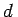
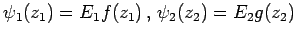
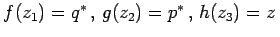
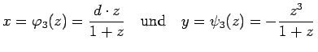
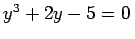
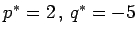

Inhalt Index DeskTop Bronstein

 Funktionen und ihre Darstellung Nomographie Fluchtlinientafeln
Funktionen und ihre Darstellung Nomographie Fluchtlinientafeln


Legt man eine der geraden Skalen auf die y-Achse, die andere auf eine Parallele dazu im Abstand , dann hat die Gleichung (2.288) die Form
Daraus folgt
Wenn man für die erste Skala den Maßstab E1 und für die zweite den Maßstab E2 wählt, dann geht (2.295a) in
über, wobei  sowie
gilt.
| Beispiel |
|
Die reduzierte Gleichung 3. Grades z3+p*z+q*=0 ist von der Form (2.295b). Setzt man E1=E2=1 und , so lauten die Formeln für die Berechnung der Koordinaten der Kurvenskala .
Die negativen Wurzeln erhält man, wenn man z durch -z ersetzt und dann die positiven Wurzeln der Gleichung z3+p*z-q* =0 bestimmt. Ablesebeispiel: , d.h. . Man liest z1=1,3 ab. |